Ich bin im vierten Lehrjahr als Informatiker EFZ Plattformentwicklung bei Sunrise in Zürich und arbeite mit Routern und Linux-Servern.
Mich interessiert Netzwerktechnik auf allen Layern, vom Kabel bis zum Routing. Im Herbst 2026 war ich für ein Praktikum einen Monat in Stockholm, bei Nrlyze. Nebenbei baue ich Websites, zum Beispiel litho.ch. Ausserhalb der Arbeit trainiere ich MMA und Kraft, und ich laufe Langstrecke.
Ort
Zürich
Jahrgang
2007
Lehrabschluss
Sommer 2027
Sprachen
Deutsch, Englisch
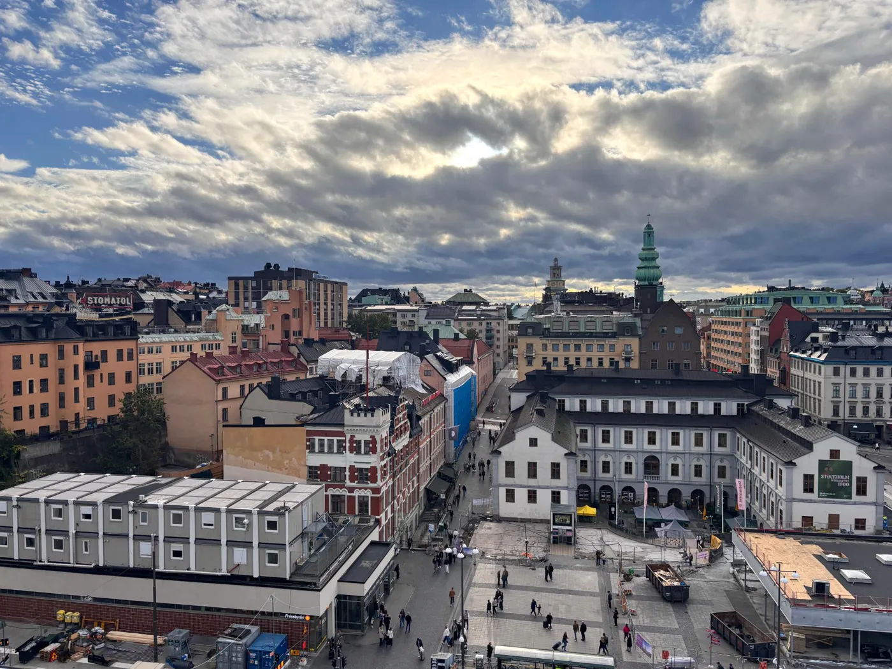
Blick über Slussen. Alle Fotos auf dieser Seite habe ich selbst gemacht.
Ein Monat in Stockholm
Praktikum als Software Developer bei Nrlyze, 19. September bis 18. Oktober 2026, über Erasmus+
Im Herbst 2026 habe ich vier Wochen in Stockholm gelebt und bei Nrlyze gearbeitet. Das Team ist klein. Gesprochen, geschrieben und dokumentiert wurde auf Englisch.
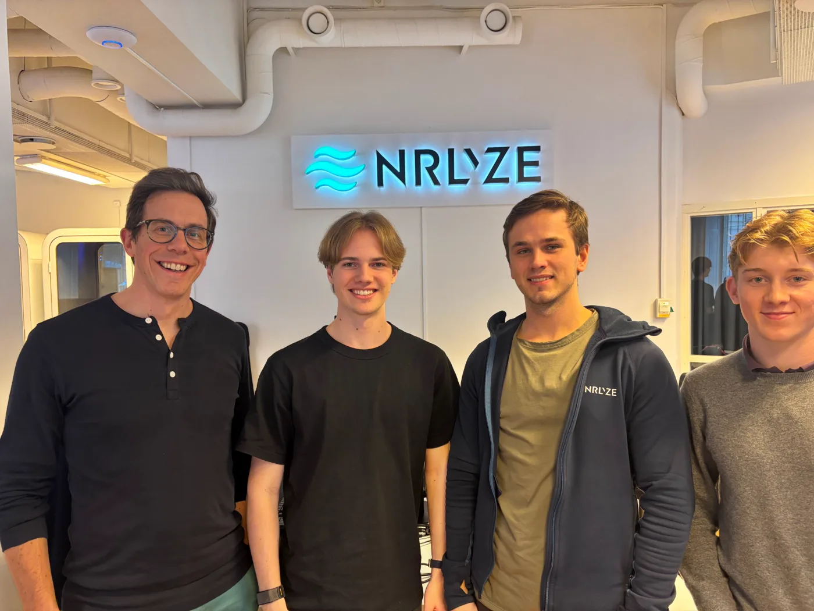
Mit dem Team im Büro von Nrlyze
Alle Server hinter eine Firewall
Nrlyze betreibt seine Server in einer OpenStack-Cloud. Sie sollten alle hinter eine eigene Firewall. Mein Auftrag war, diesen Umzug vorzubereiten: einmal ganz durchspielen, ohne die Produktion anzufassen, und so aufschreiben, dass jemand anders ihn danach an den echten Servern wiederholen kann.
Zuerst habe ich mit Terraform und Ansible eine Sandbox gebaut, die gleich aufgebaut ist wie die Produktion. Die Skripte prüfen bei jedem Lauf, in welchem Projekt sie arbeiten. Zeigen sie auf etwas anderes als die Sandbox, brechen sie ab. In dieser Kopie habe ich eine OPNsense-Firewall aufgesetzt, den Zugang über WireGuard gelöst und die sechs Server in fünf Etappen hinter die Firewall gezogen, mit einem Test nach jeder Etappe.
Schema: Die sechs Server ziehen in den Etappen A, B, C, D1 und D2 hinter die OPNsense-Firewall.
Am Schluss kam die Übergabe. Alle Firewall- und NAT-Regeln, DNS-Einträge und Security Groups stehen in einem Dokument, das man in einer Sitzung durchgehen und abnehmen kann. Dazu habe ich je ein Runbook für Sandbox und Produktion geschrieben, einen Rebuild-Guide, ein Änderungsprotokoll und eine Anleitung, wie eine andere Person das ganze Kit mit ihrem eigenen Schlüssel benutzt.
Ein Vorschlag für die Kunden-VPNs
Für die VPN-Verbindungen zu Kunden habe ich ein eigenes Gateway vorgeschlagen. Jeder Kunde bekommt einen isolierten Container. Für WireGuard, OpenVPN und IPsec gibt es je eine Vorlage, die Geheimnisse kommen aus dem Passwort-Tresor, und ausgerollt wird mit Ansible.
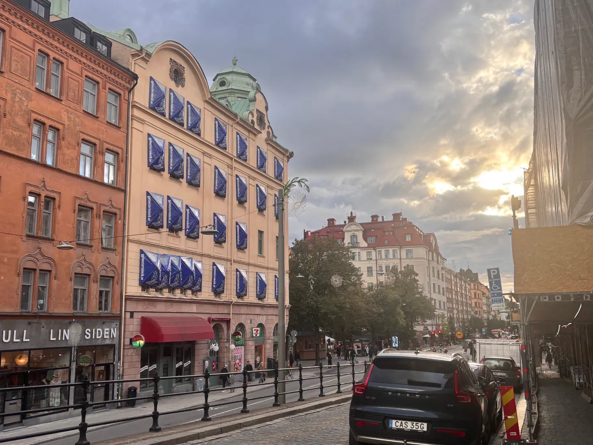
Abendlicht in der Stadt
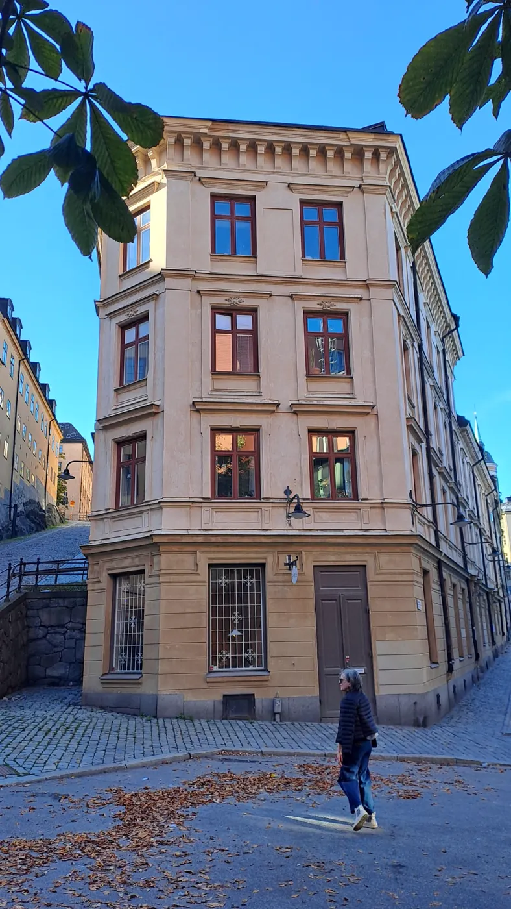
Auf dem Weg zur Arbeit
Was ich mitnehme
Änderungen erst in der Sandbox, dann in der Produktion. Keine Passwörter oder Schlüssel in Git. Unter Windows läuft alles in WSL2. Im Alltag habe ich gelernt, wie ein Entwicklerteam arbeitet: Anforderungen besprechen, Code gegenseitig reviewen, testen und erst dann ausrollen.
Website für LiTHO, Bildbearbeitung und Lithografie in Zürich, online seit 2025
LiTHO bearbeitet Bilder für Druck und Web: Retusche, Farbkorrektur, Composing. Ich habe die Seite als React-App gebaut; im Mittelpunkt stehen die Arbeiten.
Portfolio als Raster in Graustufen, dazu Detailseiten mit Karussell und Zähler
Vorher und nachher: ein Schieberegler über dem Bild zeigt, was retuschiert wurde
Kontaktformular über EmailJS, reCAPTCHA gegen Spam
Sitemap und Meta-Tags pro Seite, Impressum und Datenschutz als eigene Seiten
Die erste Version war eine einfache Seite in Blau mit Lebenslauf. Für Version 3 wollte ich etwas Eigenes: einen alten Computer, den man einschaltet, und dahinter einen Desktop mit Ordnern und Fenstern, die man minimieren und auf Vollbild stellen kann.
Gebaut habe ich sie zusammen mit Claude Code, einem KI-Assistenten im Terminal. Ich habe die Richtung vorgegeben, Entwürfe verworfen und Rückmeldungen gegeben; Claude hat den Code geschrieben und im Browser getestet.
Vorbilder: tommybiglow.com für den Aqua-Look und den Zoom in den Bildschirm, madebyigor.com/lab für die einfache Bedienung, ivan.technology für die generativen Grafiken. Ihren JavaScript-Code haben wir mit dem Reverse-Engineering-Werkzeug rea untersucht. Übernommen sind Ideen und Zahlenwerte, keine Bilder.
Reines HTML, CSS und JavaScript ohne Framework. Das Netz im Hintergrund zeichnet ein Canvas, das Porträt ein eigener WebGL-Shader.
Die Screenshots von litho.ch kommen aus einem Edge ohne Fenster, gesteuert über das DevTools-Protokoll. Fotos und Video sind mit ffmpeg verkleinert, ohne Metadaten.
Foto iMac G3: True Tech Talk Time, CC BY-SA 4.0, Fuss farblich angepasst. Alle anderen Fotos sind von mir. Schriften: Geist Mono, Geist und Instrument Serif, SIL Open Font License.
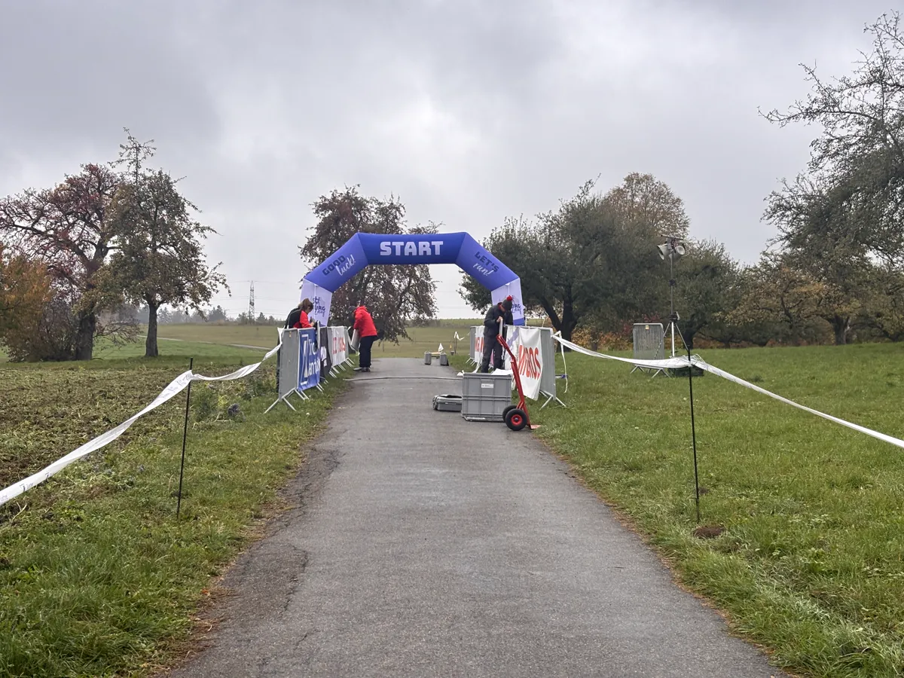
Start am Kyburglauf
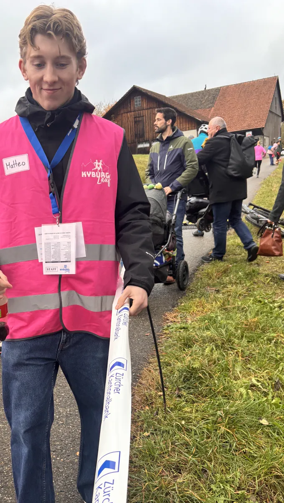
Mein Posten an der Strecke
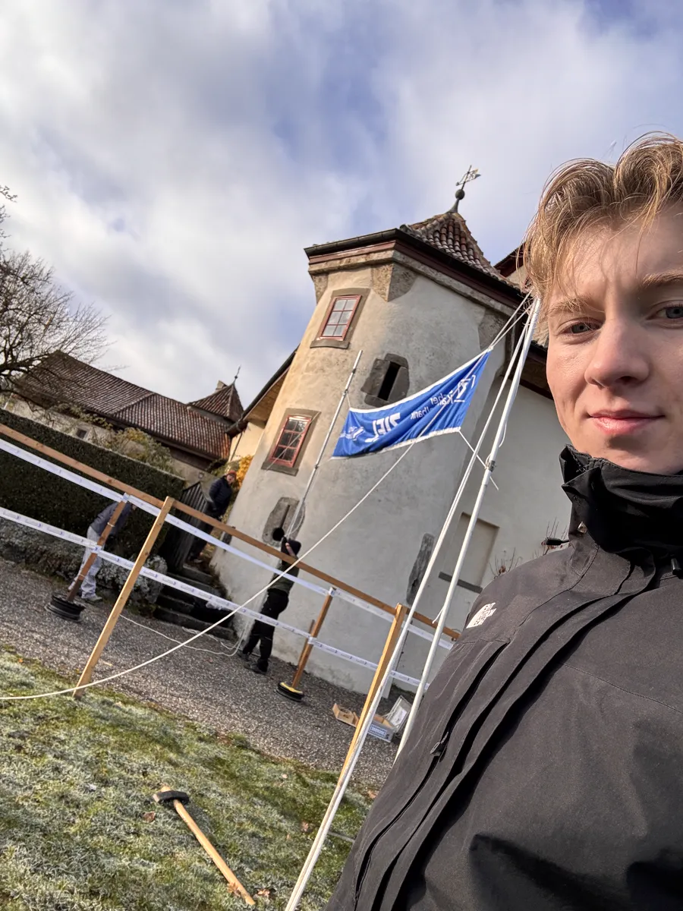
Aufbau beim Schloss Hegi
Ohne Freiwillige kein Lauf
Vertiefungsarbeit im Allgemeinbildenden Unterricht, Oberthema Gesellschaftliches Engagement, Abgabe am 25. November 2026
Die VA ist die grosse Einzelarbeit im letzten Lehrjahr. Mein Thema ist Freiwilligenarbeit an Laufveranstaltungen. Sonst stehe ich als Läufer auf der anderen Seite vom Absperrband, also habe ich selbst mitgeholfen: am 7. November 2026 am Kyburglauf und beim Aufbau für den Hegemer Chlauslauf.
Theorie: was Freiwilligenarbeit ist, wie verbreitet sie in der Schweiz ist und wie ein Lauf übers Jahr organisiert wird
Modellrechnung für den Kyburglauf: welche bezahlten Stunden die Freiwilligen ersetzen und welche Kosten trotzdem bleiben
Erlebnisbericht mit eigenen Fotos: mein Posten am Start, die Kinderläufe, der Aufbau am Chlauslauf
Interviews mit dem OK-Präsidenten des Kyburglaufs, dem Vizepräsidenten des gurtenCLASSIC und einem erfahrenen Marathonläufer
Projektbeschrieb, Arbeitsjournal, Zeitungsquellen und eine Grafik aus dem Freiwilligen-Monitor Schweiz
Identität und Sozialisation, Wirtschaft
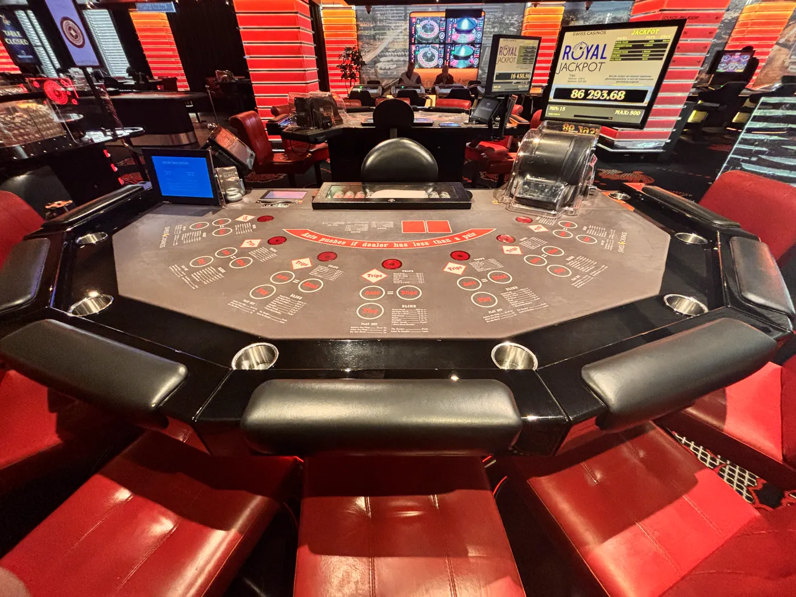
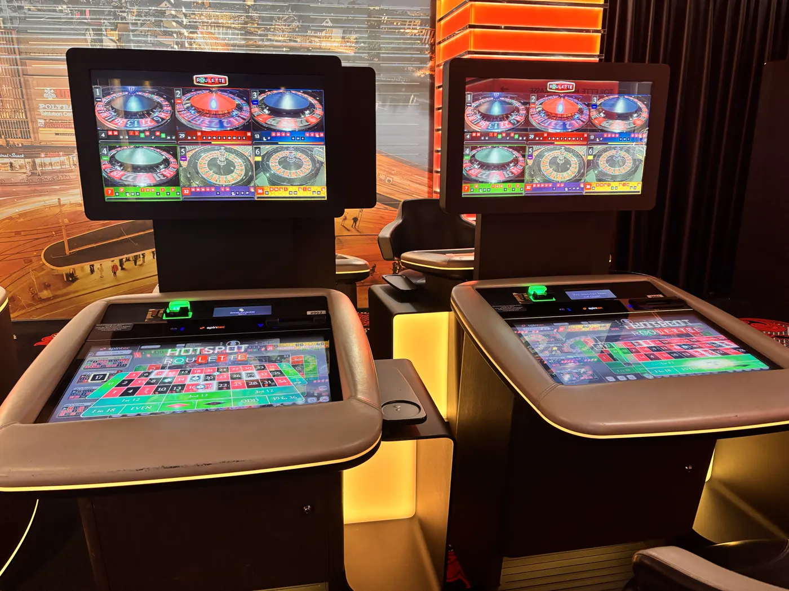
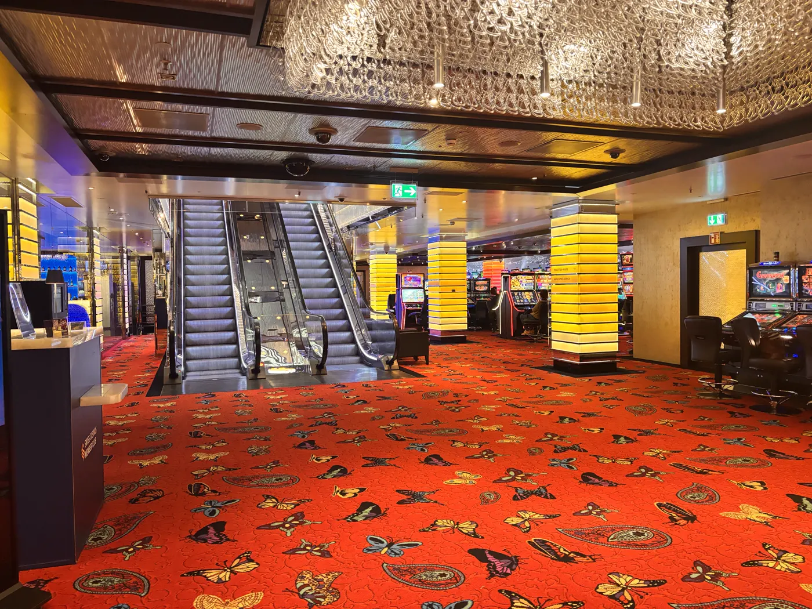
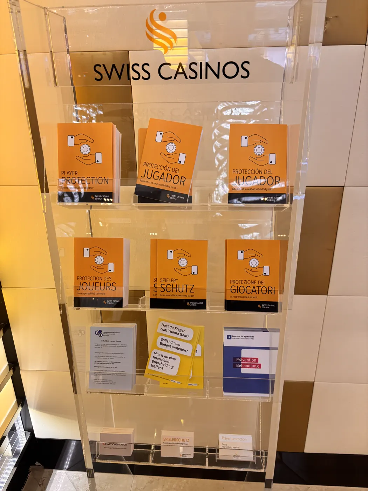
Unser Besuch im Casino. Fotos: Probe-VA-Gruppe
Probe-VA: Wenn Spielen zur Sucht wird
Übungsdurchgang für die Vertiefungsarbeit, 3. Lehrjahr, Gruppe zu dritt
Bevor die echte VA kommt, spielt man den ganzen Ablauf einmal in der Gruppe durch. Unser Thema war Geldspiel: Ursachen, Folgen und Prävention von Glücksspielsucht. Wir waren in einem Casino und haben angeschaut, wie es dort aussieht und welche Hilfe angeboten wird. Bei einer Fachstelle für Suchtprävention haben wir ein Interview geführt.
Projektbeschrieb in mehreren Versionen bis zur definitiven Fassung
Interviews vorbereitet, aufgenommen und abgeschrieben
Theorieteil, Erlebnisbericht und eine Reflexion pro Person
Arbeitsjournal über die ganze Zeit
Für die echte VA habe ich mitgenommen: Interviews sofort abschreiben, das Journal jeden Tag führen und Quellen von Anfang an sauber notieren.
Ablauf als Schema: Foto, Tunnel, Modell, SMS
Smart Fridge
Module M241 und M245, Zweierteam, Mai 2026 bis Februar 2027 (läuft)
Die Idee aus dem Projektantrag "Smart Shopping": Kameras im Kühlschrank fotografieren den Inhalt, ein selbst trainiertes YOLO-Modell zählt die Lebensmittel, zuerst nur Bananen. Liegen nur noch zwei da, schickt AWS eine SMS. In M241 haben wir die Idee mit Antrag und Marktanalyse geplant, in M245 setzen wir sie um.
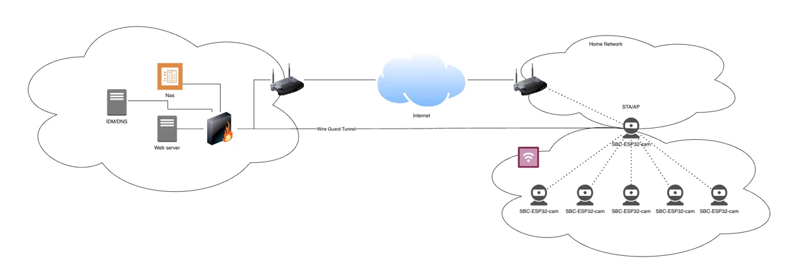
Netzplan
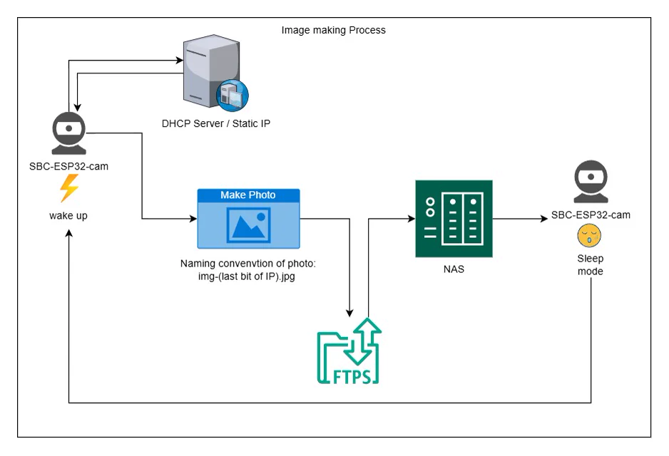
Ablauf einer Kamera
Mehrere ESP32-CAMs mit Akku wachen auf, machen ein Foto, laden es hoch und schlafen vier Stunden
Die Haupt-Kamera spannt ein eigenes WLAN auf und baut einen WireGuard-Tunnel ins Homelab; vorher holt sie die Uhrzeit per NTP, sonst schlägt der Handshake fehl
Auf einem Proxmox-Server zählt das YOLO-Modell die Bananen, der Bestand landet in DynamoDB
Eine Lambda-Funktion prüft den Schwellwert, SNS verschickt die SMS
Budget laut Antrag rund 95 Franken; Lambda und DynamoDB laufen im Gratis-Kontingent
BBW Berufsbildungsschule Winterthur, 2023 bis 2027
An der Berufsschule läuft fast alles über Module. Jedes dauert ein paar Wochen und endet meistens mit einer Dokumentation, die ich selbst aufsetze und teste. Hier steht, was davon hängen geblieben ist, nach Themen statt nach Nummern.
Netzwerke
M117, M129, M145, M300
Im ersten Lehrjahr haben wir zu zweit das Netz für eine erfundene Firma geplant, die Muster GmbH: Verkabelung im Grundriss, logischer Plan, Materialliste und eine Simulation in Filius. In M129 kamen in Packet Tracer Bridging, Link Aggregation, Spanning Tree und Subnetting dazu.
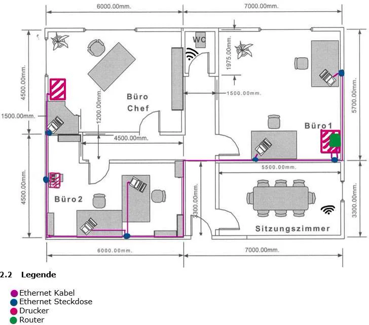
M117: Verkabelungsplan der Muster GmbH
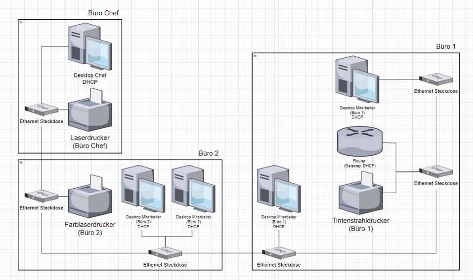
M117: logischer Netzwerkplan
Später wurde es tiefer. In M145 habe ich in GNS3 ein MPLS-Netz aufgebaut. Das kannte ich schon aus dem Core bei Sunrise, aber einmal alles selbst zu konfigurieren ist etwas anderes. In M300 habe ich mit BIND auf Debian einen Nameserver mit eigener Zone betrieben, mit Primary und Secondary, dynamischen Updates per TSIG und Reverse DNS unter IPv6. Bei HTTPS habe ich zwei Subdomains verglichen, eine mit selbst signiertem Zertifikat und eine mit Let's Encrypt, den TLS-Handshake in Wireshark auseinandergenommen und die Zertifikate am Ende über ACME mit dns-01 automatisch erneuern lassen.
Linux-Server und Dienste
M123, M141, M143
DHCP auf Ubuntu aufgesetzt und den Ablauf mitgeschnitten, einen DNS-Server installiert, einen Fileserver für die Muster GmbH gebaut. In M143 habe ich TrueNAS mit RAID eingerichtet und dann absichtlich kaputt gemacht: die VM hart abgeschossen, eine Festplatte entfernt und geschaut, ob die Daten noch da sind. Sie waren es. Dazu Backups mit Duplicati und ein Notfallhandbuch.
Cloud und Automatisierung
M169, M158, M346
In M169 ging es um Container: Dockerfiles, Docker Compose und cloud-init, das eine Spring-Boot- und eine React-App beim ersten Start fertig installiert. In M158 habe ich das auf ein echtes Projekt angewendet, eine Nextcloud in AWS Fargate. Eine GitLab-Pipeline baut die Images und lädt sie in ECR, ECS startet Nextcloud und MariaDB, die Daten liegen auf EFS und überleben jeden Neustart.
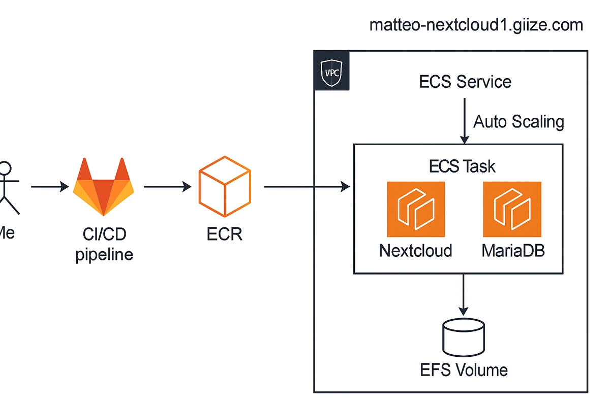
M158: Aufbau der Nextcloud in AWS
M346 war ein ganzes Semester cloud-init und Ansible. Ich habe Playbooks für Nginx, MariaDB, phpMyAdmin, den Node Exporter und sogar einen Minecraft-Server geschrieben. Die meiste Zeit ging an Dinge, die in keiner Anleitung stehen: YAML-Einrückung, SSH-Schlüssel und Verbindungen, die einfach nicht wollten.
Benutzer und Verzeichnisdienst
M122, M159
In M122 habe ich Skripte geschrieben, die Konten im Active Directory anlegen, sperren und per GPO einrichten. In M159 kam die grosse Fallstudie: Eine Firma mit 25 Leuten zieht mit ihrer Benutzerverwaltung nach Azure. Windows- und Linux-Clients hängen an der Domäne, Netzlaufwerke pro Abteilung bekommen ihre Rechte nach AGDLP, und Eintritte und Austritte aus einer HR-Liste landen automatisch im AD. Von Konzept über Umsetzung und Testprotokoll bis zur Abnahme habe ich alles allein dokumentiert.
Sicherheit
M114, M182
Angefangen hat es mit asymmetrischer Verschlüsselung in M114. In M182 haben wir zu zweit Hogwash kompiliert, ein altes Intrusion-Detection-System, und mit Bait and Switch einen Angreifer auf einen Honeypot umgeleitet. Dazu ein Incident-Plan, wer bei einem Vorfall wen informiert, und ein Konzept gegen Social Engineering.
Programmieren und Hardware
M319, M216, M164
Python habe ich in M319 mit einem Notenrechner gelernt, SQL in M164 mit der Datenbank für einen Ticketshop. In M216 haben wir einen ESP32 programmiert, mit Interrupts und Multitasking. Beim Smart Fridge arbeite ich wieder mit dem ESP32.
Aus meinem Training: Kreuzheben, Sparring, Bodenkampf, Pratzen
Was ich neben der Arbeit mache
Sport ist mein Ausgleich zum Bildschirm. Ich mache Kampfsport, Krafttraining und laufe. Und weil man nur so gut trainiert, wie man isst, beschäftige ich mich seit einer Weile auch mit Ernährung.
MMA
Mixed Martial Arts verbindet Schlagen, Ringen und Bodenkampf. Mir gefällt, dass man nie fertig ist: Im Sparring merkt man sofort, ob eine Technik sitzt oder nicht.
Laufen
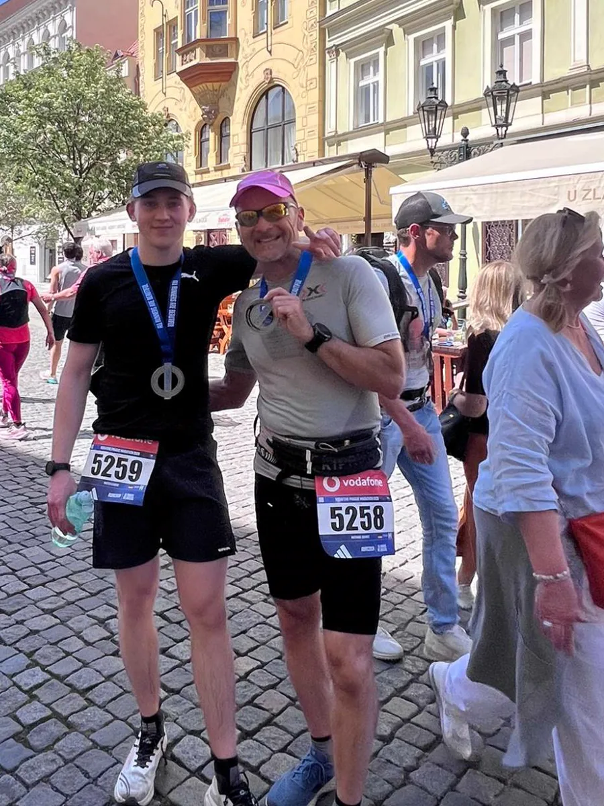
Im Ziel in Prag
Ich laufe Langstrecke. Mein grösster Lauf bisher war der Marathon in Prag.
Ohne Helferinnen und Helfer an der Strecke gäbe es solche Läufe nicht. Darum geht es auch in meiner Vertiefungsarbeit.
Krafttraining
Im Gym mache ich vor allem Grundübungen wie Kreuzheben. Kraft ist die Basis für beides: Sie hilft im Kampf und macht beim Laufen weniger anfällig für Verletzungen.
Ernährung
Nebenbei lerne ich im Selbststudium Ernährungswissenschaft, mit dem frei verfügbaren Lehrbuch Human Nutrition der University of Hawaii. Der Plan hat neun Module: Chemie und Verdauung, Makro- und Mikronährstoffe, Sporternährung, wie man Studien liest. Als Abschlussprojekt schreibe ich einen Wochenplan für jemanden, der Kraft, Laufen und Kampfsport verbindet, also für mich. Ein anerkannter Abschluss ist das nicht. Aber ich weiss jetzt, was auf meinem Teller liegt und warum.
Seit 2023
Informatiker EFZ Plattformentwicklung
Sunrise, Zürich
Basislehrjahr mit überbetrieblichen Kursen am Berufsbildungscenter. Danach im IP-Transport, mit Routing auf Cisco, Huawei und Juniper, und in der Unix-Abteilung mit Red Hat und Ansible.
September bis Oktober 2026
Praktikum als Software Developer
Nrlyze, Stockholm
Ein Monat über Erasmus+. Cloud-Infrastruktur mit OpenStack, Terraform und Ansible, dazu der Firewall-Umzug.
Seit 2023
Berufsfachschule
BBW Berufsbildungsschule Winterthur
Module zu Netzwerk, Servern, Cloud und Sicherheit. Qualifikationsverfahren im Sommer 2027.